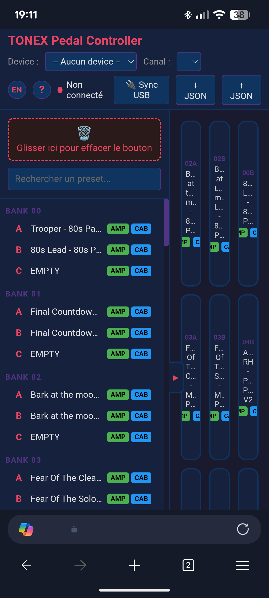
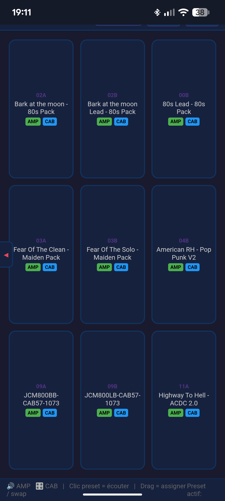

Fonctionnalités
- Grille 3×3 de presets assignables avec noms et badges AMP/CAB
- Bibliothèque complète des 150 presets (50 banks × 3 slots A/B/C)
- Synchronisation USB — lecture de tous les noms et flags AMP/CAB via USB CDC série
- Contrôle MIDI — Bank Select + Program Change pour changer de preset
- Glisser-déposer — assigner, swap, supprimer via corbeille
- Édition — double-clic pour renommer et toggler AMP/CAB
- Recherche filtrante dans la bibliothèque
- Persistance — configuration sauvegardée en localStorage
- Export/Import JSON — exporte les noms de presets vers un fichier, importe sur une autre config
- Bascule bibliothèque — chevron discret pour minimiser/étendre la bibliothèque de presets
- Support Android — fonctionne sur Android Chrome via fallback WebUSB
Prérequis
| Composant | Version requise |
|---|---|
| Navigateur | Chrome 89+ ou Edge 89+ (Web MIDI + Web Serial) |
| Système | Windows 10/11, Android (via WebUSB) |
| Pédalier | IK Multimedia TONEX Pedal (full size) |
| Câble | USB-C connecté au port USB du pédalier |
file:// ne fonctionnera pas pour le MIDI et le USB. Sur Android, le fallback WebUSB s'active automatiquement.
Installation
Option 1 — Serveur web local (recommandé)
Copier le dossier tonexpedal/ dans le répertoire racine de votre serveur web :
https://mon-serveur/tonexpedal/Option 2 — localhost
# Depuis le dossier tonexpedal/
npx serve -s . -l 3000
# ou
python -m http.server 3000Puis ouvrir http://localhost:3000.
Option 3 — Fichier statique (sans serveur)
Simplement double-cliquer sur index.html ou l'ouvrir via file:/// dans votre navigateur. L'interface et la bibliothèque fonctionnent, mais Web MIDI et Web Serial ne sont pas disponibles — vous pouvez éditer les presets manuellement mais pas envoyer de MIDI ni synchroniser via USB.
Utilisation
Connexion MIDI
- Brancher le TONEX Pedal en USB
- Ouvrir l'application dans Chrome/Edge
- Sélectionner le device MIDI dans le menu Device
- Choisir le canal MIDI (défaut : Ch 1)
- Le statut passe à Connecté
Synchronisation USB
- Cliquer sur Sync USB
- Sélectionner le port série TONEX Pedal
- La progression s'affiche : Hello → State → 150 presets
- Les noms et badges AMP/CAB se remplissent automatiquement
Interactions
| Action | Résultat |
|---|---|
| Clic simple sur un bouton | Envoie Bank Select + Program Change au pédalier |
| Clic simple sur un preset de la bibliothèque | Envoie le MIDI pour écouter le preset |
| Glisser un preset de la bibliothèque → grille | Assigne le preset au bouton |
| Glisser un bouton → un autre bouton | Swap les positions |
| Glisser un bouton → corbeille | Vide le bouton |
| Double-clic sur un bouton ou preset | Ouvre le modal d'édition (nom, AMP, CAB) |
| Taper dans la barre de recherche | Filtre la bibliothèque par nom ou numéro |
| Cliquer sur ⬇ JSON | Exporte les noms de presets en fichier JSON |
| Cliquer sur ⬆ JSON | Importe un fichier JSON de presets (valide et remplace les noms) |
| Cliquer sur le chevron (▶/◀) | Minimise/étend la bibliothèque de presets |
Badges AMP/CAB
Chaque preset affiche deux badges indiquant son état :
Architecture technique
┌─────────────────────────────────────────────────────────────────┐ │ TONEX Pedal Controller │ │ index.html (single-file) │ │ │ │ ┌──────────────┐ ┌──────────────────────┐ ┌───────────┐ │ │ │ Bibliothèque │ │ Grille 3×3 │ │ Header │ │ │ │ 150 presets │◄──►│ 9 boutons assignés │ │ MIDI │ │ │ │ + recherche │ │ + drag & drop │ │ Sync USB │ │ │ └──────────────┘ └──────────────────────┘ └───────────┘ │ │ │ │ │ │ │ └──────────────────────┴───────────────────────┘ │ │ │ │ │ ┌─────────┴─────────┐ │ │ │ localStorage │ │ │ │ state persistence │ │ │ └─────────┬─────────┘ │ │ │ │ └──────────────────────────────┼──────────────────────────────────┘ │ ┌────────────────┼────────────────┐ │ │ │ ┌────────┴────────┐ ┌────┴────┐ ┌─────────┴────────┐ │ Web MIDI API │ │ Web Serial│ │ TONEX Pedal │ │ Bank Select │ │ USB CDC │ │ 50 banks × 3 │ │ Program Change │ │ HDLC │ │ = 150 presets │ └─────────────────┘ └─────────┘ └──────────────────┘
Protocole MIDI
Mapping presets
Le TONEX Pedal utilise 50 banks × 3 slots (A/B/C) = 150 presets.
| Presets | Bank Select (CC#0) | Program Change |
|---|---|---|
| 0 – 127 | CC#0 = 0 | PC = preset# |
| 128 – 149 | CC#0 = 1 | PC = preset# − 128 |
Messages envoyés
Bank Select : [0xB0 + channel, 0x00, value] // value = 0 ou 1
Program Change: [0xC0 + channel, PC] // PC = 0–127Calcul Bank/Slot → PC
pc = bank × 3 + slotIndex // slotIndex: A=0, B=1, C=2
bank = Math.floor(pc / 3)
slot = ['A', 'B', 'C'][pc % 3]Protocole USB CDC Série
Interfaces USB du pédalier
| Interface | Usage |
|---|---|
| USB-MIDI | Bank Select / Program Change (via Web MIDI API) |
| USB CDC | Communication série : lecture presets, paramètres (via Web Serial API) |
0x10. Le TONEX One utilise 0x0B (non supporté).
Trame HDLC
[0x7E] [payload stuffed] [CRC_lo stuffed] [CRC_hi stuffed] [0x7E]- Délimiteur :
0x7E - Byte stuffing :
0x7E→0x7D 0x5E,0x7D→0x7D 0x5D - CRC-CCITT : polynomial
0x8408, init0xFFFF, résultat inversé
Commandes
| Commande | Payload | Description |
|---|---|---|
| Hello | b9 03 00 82 04 00 80 10 01 b9 02 02 10 |
Initialisation connexion |
| Request State | b9 03 00 82 06 00 80 10 03 b9 02 81 01 02 10 |
Demande l'état courant |
| Request Preset (0–127) | b9 03 81 00 02 82 06 00 80 10 03 b9 04 10 01 [index] 00 |
17 octets |
| Request Preset (128+) | b9 03 81 00 02 82 06 00 80 10 03 b9 04 10 01 80 [index] 00 |
18 octets (escape 0x80) |
Réponse preset — Structure
[header] [B9 04 B9 02 BC 21] [nom 33 octets] [paramètres...]
↑ NAME_MARKERSection paramètres
La section commence par le marker BA 03 BA 6D (PARAM_MARKER), suivie de floats encodés : 0x88 + 4 octets (little-endian).
| Index | Offset (×5) | Paramètre | Valeurs |
|---|---|---|---|
| 17 | 85 | AMP Enable | 0.0 = off, >0.5 = on |
| 22 | 110 | CAB Type | 0.0 = off, 1.0 = VIR, 2.0 = Tone Model |
Séquence de synchronisation
1. Ouvrir port série (115200 bauds)
2. Attendre 500ms
3. Envoyer Hello → lire réponse
4. Attendre 200ms
5. Envoyer Request State → lire réponse
6. Attendre 200ms
7. Pour chaque preset (0 à 149):
a. Envoyer Request Preset
b. Lire réponse
c. Extraire nom (après NAME_MARKER)
d. Extraire AMP/CAB (après PARAM_MARKER)
8. Sauvegarder en localStorageAbstraction de transport (Support Android)
L'application utilise une couche d'abstraction pour supporter à la fois Web Serial (desktop) et WebUSB (Android) :
transportSend(frame) → Serial.write() ou USB.bulkTransferOut()
transportStartRead() → boucle reader Serial ou boucle USB.bulkTransferIn()
transportIsOpen() → serialPort.opened ou usbDevice.opened
transportDisconnect() → serialPort.close() ou usbDevice.close()Flux de connexion
- Essayer Web Serial en premier (desktop Chrome/Edge)
- Si non disponible ou échec, fallback vers WebUSB (Android Chrome)
- WebUSB affiche le sélecteur de device filtré par VID
0x1963(IK Multimedia)
Configuration WebUSB CDC
- Trouver l'interface CDC Communication (classe
0x02) → control transfers - Trouver l'interface CDC Data (classe
0x0A) → bulk endpoints pour données HDLC - Si classe
0x0Anon trouvée, fallback sur toute interface avec bulk endpoints
Persistance
Tout est sauvegardé en localStorage sous la clé tonex-state :
{
"buttons": {
"0": { "bank": 0, "slot": "A" },
"4": { "bank": 1, "slot": "B" }
},
"midi": { "device": "ToneX MIDI Out", "channel": 0 },
"presets": {
"0_A": { "name": "Trooper - 80s Pack", "amp": true, "cab": false },
"0_B": { "name": "80s Lead - 80s Pack", "amp": true, "cab": true }
}
}Dépannage
| Problème | Solution |
|---|---|
| Aucun device MIDI | Vérifier le branchement USB. chrome://midi-devices |
| Web Serial indisponible | Chrome 89+ ou Edge 89+. Vérifier HTTPS/localhost |
| Sync USB échoue | Fermer IK Tonex et tout logiciel utilisant le port série |
| Noms ne s'affichent pas | Relancer Sync USB. Console F12 pour erreurs |
| AMP/CAB toujours gris | Console F12 : vérifier les float32 lus (log des 3 premiers presets) |
| Page vide après chargement | Recharger. Vider localStorage si corrompu |
| Android : Sync ne lit pas les données | Le fallback WebUSB devrait s'activer automatiquement. Vérifier les logs d'interface/endpoint dans la console |
Crédits
- Protocole USB CDC : reverse-engineered depuis Builty/TonexOneController
- Documentation protocole : vit3k/tonex_controller